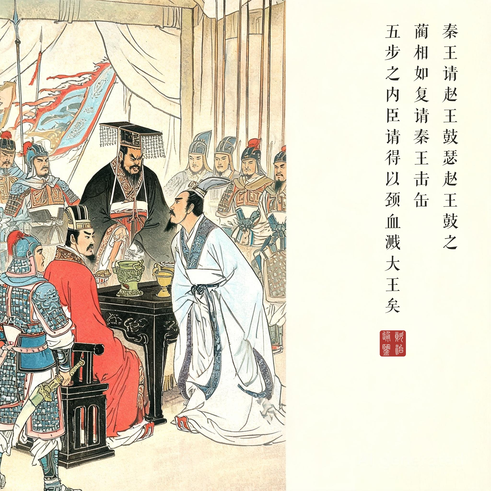
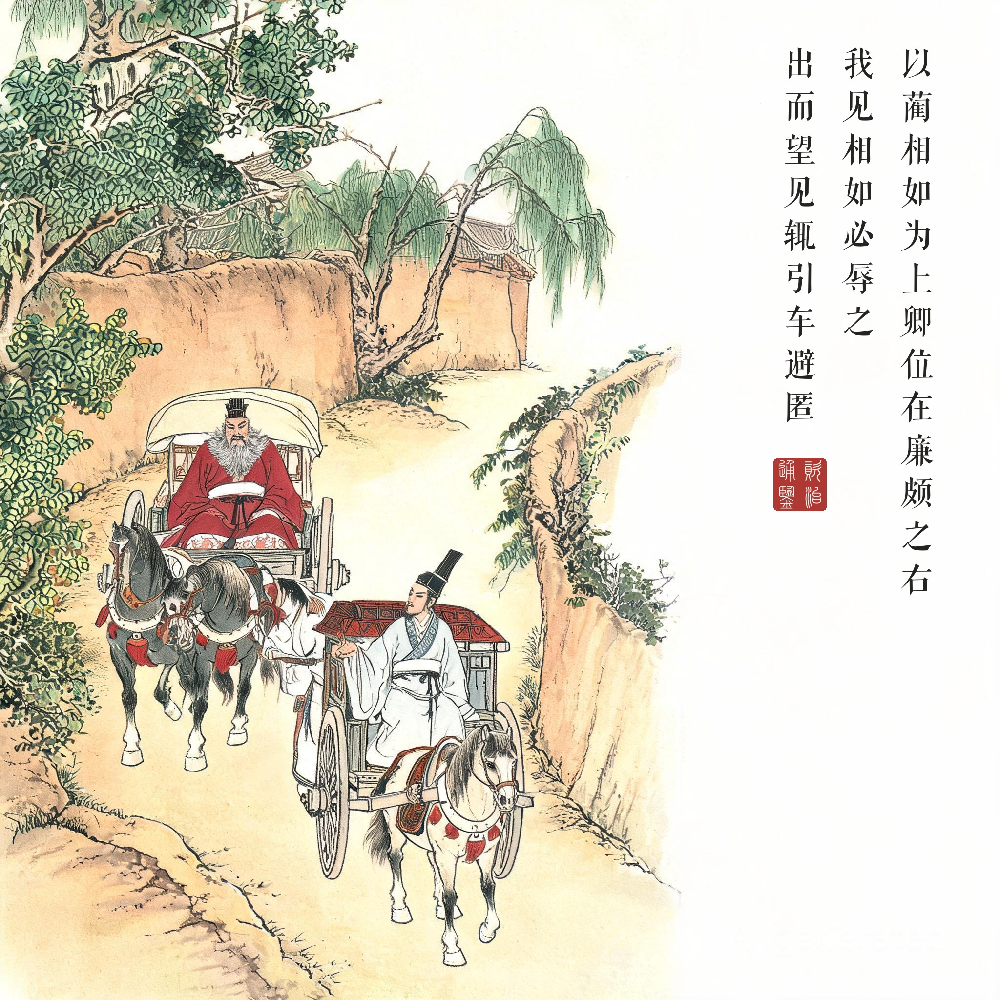
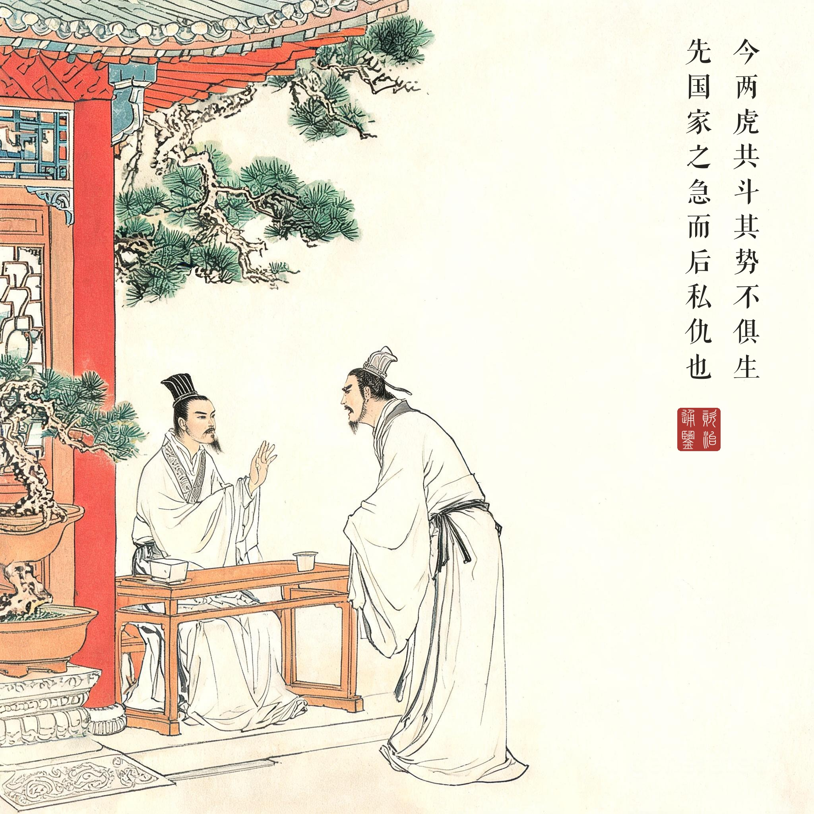
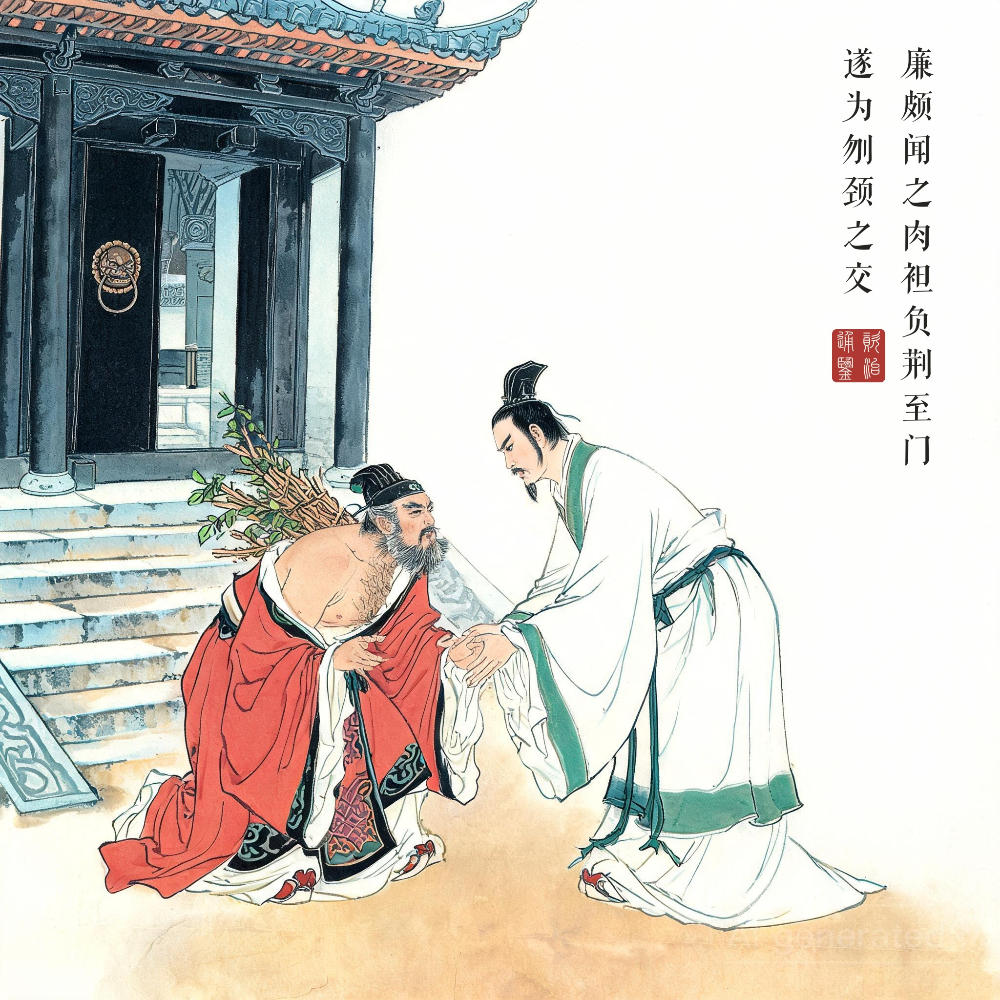

《资治通鉴 · 卷第四 · 周纪四》赧王三十六年（公元前 279 年）
（据 daizhigev20《资治通鉴》底本节录）
秦王使使者告赵王，愿为好会于河外渑池。赵王欲毋行，廉颇、蔺相如计曰："王不行，示赵弱且怯也。"赵王遂行，相如从。廉颇送至境，与王诀曰："王行，度道里会遇之礼毕，还，不过三十日。三十日不还，则请立太子，以绝秦望。"王许之。会于渑池。王与赵王饮，酒酣，秦王请赵王鼓瑟，赵王鼓之。蔺相如复请秦王击缶，秦王不肯。相如曰："五步之内，臣请得以颈血溅大王矣！"左右欲刃相如，相如张目叱之，左右皆靡。王不怿，为一击缶。罢酒，秦终不能有加于赵。赵人亦盛为之备，秦不敢动。
赵王归国，以蔺相如为上卿，位在廉颇之右。廉颇曰："我为赵将，有攻城野战之功。蔺相如素贱人，徒以口舌而位居我上。吾羞，不忍为之下！"宣言曰："我见相如，必辱之！"相如闻之，不肯与会；每朝，常称病，不欲争列。出而望见，辄引车避匿。其舍人皆以为耻。相如曰："子视廉将军孰与秦王？"曰："不若。"相如曰："夫以秦王之威而相如廷叱之，辱其群臣。相如虽驽，独畏廉将军哉！顾吾念之，强秦之所以不敢加兵于赵者，徒以吾两人在也。今两虎共斗，其势不俱生。吾所以为此者，先国家之急而后私仇也。"廉颇闻之，肉袒负荆至门射罪（按：通行本作"谢罪"），遂为刎颈之交。
秦王派使者告诉赵王，愿在河外渑池友好会盟。赵王不想去，廉颇、蔺相如合计："大王不去，就是向秦示弱示怯。"赵王于是成行，蔺相如随从。廉颇送到边境，与王诀别："大王此去，估计路程加上会盟礼节，来回不过三十日。三十日不回，就请立太子为王，断掉秦国要挟的念头。"赵王应允。渑池会上，秦王与赵王饮酒，酒兴正浓，秦王请赵王鼓瑟，赵王弹了。蔺相如也请秦王击缶，秦王不肯。相如说："五步之内，我脖子的血就要溅到大王身上了！"左右侍卫拔刀要上，相如张目叱退，众人纷纷后退。秦王不悦，还是敲了一下缶。酒宴结束，秦国始终没能压赵国一头。赵国这边也早已严加戒备，秦国终究不敢动手。
赵王回国，拜蔺相如为上卿，位在廉颇之上。廉颇说："我做赵将，攻城野战的功劳；蔺相如本是低贱之人，只凭一张嘴就爬到我头上。我以居他之下为耻！"放话说："见到相如，必定羞辱他！"相如听说后处处回避；每逢朝会常称病不去，不想争位次；出门望见廉颇的车驾，就掉头躲进小巷。门客都觉得丢脸。相如问："你们看廉将军和秦王谁厉害？"答："不如秦王。"相如说："以秦王的威势，我尚且敢在朝堂上叱责他、羞辱他的群臣。我相如再无能，难道单单怕廉将军？我只是想到：强秦之所以不敢对赵国用兵，就是因为有我们两人在。如今两虎相斗，必有一死。我这样做，是把国家的急难放在前面，把私人的恩怨放在后头。"廉颇听说后，袒露肩背、背负荆条登门谢罪，二人从此结为生死之交。
渑池是一场擂台。鼓瑟与击缶，一雅一俗之间是国格的暗战：秦王令赵王鼓瑟，是要"记录在案"的羞辱；相如请秦王击缶，是把自己的王抬到"瓦器"的位分上再奉还一记。值得注意的是会盟之外的两层底牌——廉颇送至边境的"三十日立太子"之约，与"赵人亦盛为之备"的军事部署：外交的每一分底气，背后都是刀兵。
引车避匿才是全回的高潮。渑池是勇，避匿是更大的勇。廉颇扬言必辱之，相如的车驾一让再让——朝会称病、路遇改道，连门客都觉得屈辱。直到那句千古名言："先国家之急而后私仇也。"勇气用于敌人是锋，用于自己人是鞘。老将廉颇闻言肉袒负荆——一刀砍向自己的体面，与相如的忍构成同一种担当的两面。将相和，则赵国在秦的虎口下又撑了十年。
读画小识。第三幕庭院对谈是全回的"画眼"：相如抬手挽留拂袖欲去的门客，那段"两虎共斗"的剖白，正是第四幕负荆登门的因；第四幕廉颇袒肩背荆、相如疾步下阶搀扶，与第一幕渑池帐中相如张目叱退秦王甲士首尾呼应——一外一内，刚柔各如其时。